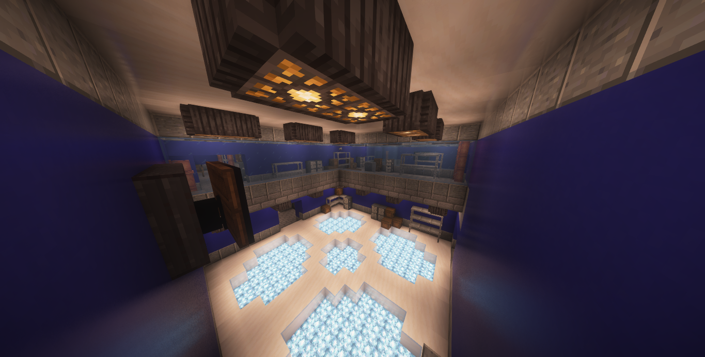
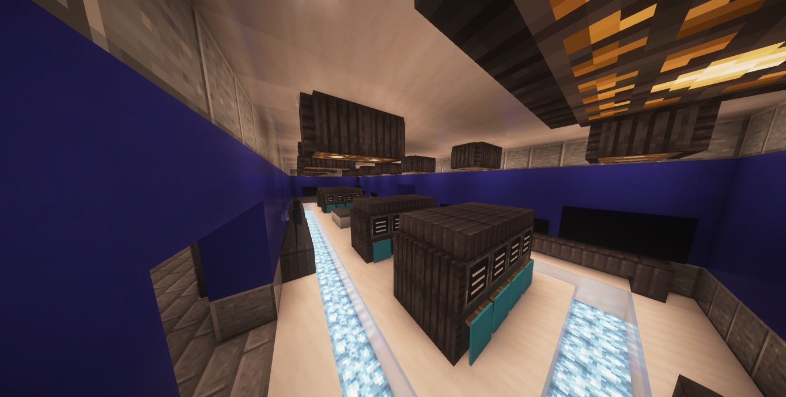
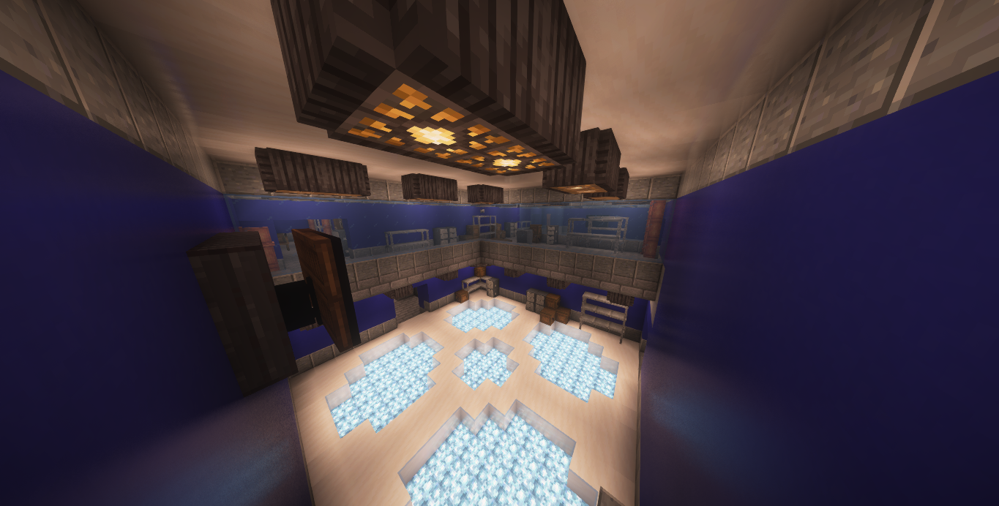
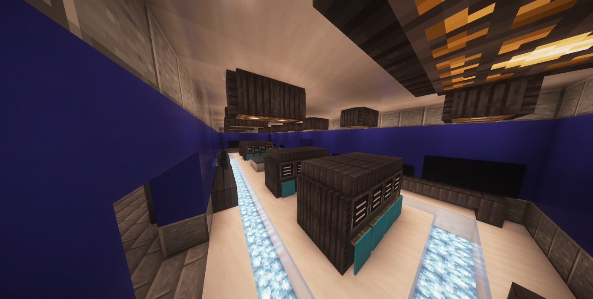

Departamento de Informação
O Departamento de Informação é responsável pelo armazenamento, catalogação e análise de registros relacionados a anomalias. Todas as informações coletadas pela A.F.A passam por este setor.
Funções
- Registro e catalogação de anomalias
- Manutenção de bancos de dados
- Distribuição de informações internas

Nome: Chesed
Idade: 42
Aniversário: 12/08
Gênero: Masculino
Cargo: Diretor de Informação
Trabalha na AFA desde:1997
Instalações do Departamento
 


